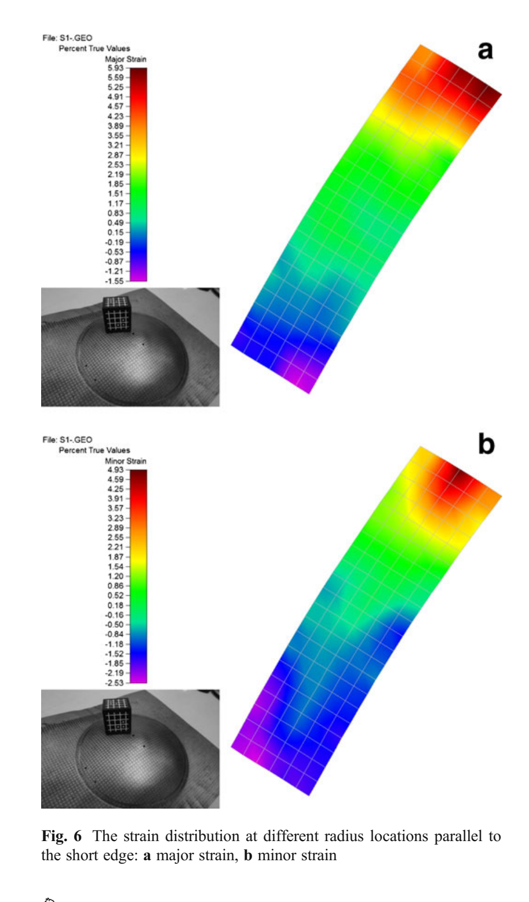

Journal article
Study on the driver plate for electromagnetic forming of titanium alloy Ti-6Al-4V
Research at a glance
{kind=link}

Abstract
In order to improve energy efficiency, a driver plate made from high-conductivity material is normally used in the electromagnetic forming process of high-strength but low-conductivity sheet metal. The choice of driver plate significantly influences final deformation of the workpiece. In this paper, the electromagnetic free bulging process of Ti-6Al-4V titanium alloy sheet, widely used in aerospace, was studied by both experimental means and numerical simulation. The forming efficiency and quality of the workpiece under different types of driver plates were investigated in detail. The results show that by using high-conductivity and easily deformed materials such as aluminum alloy, with a skin depth in thickness, high efficiency and uniform deformation can be achieved. The results of this study can provide guidance on the choice of process parameters such as the material and thickness of a driver plate.
Keywords
Recommended citation
Fenqiang Li, Jianhua Mo, Jianjun Li, Haiyang Zhou, and Liang Huang (2013). Study on the driver plate for electromagnetic forming of titanium alloy Ti-6Al-4V. The International Journal of Advanced Manufacturing Technology, 69(1-4), 127–137. https://doi.org/10.1007/s00170-013-5002-1